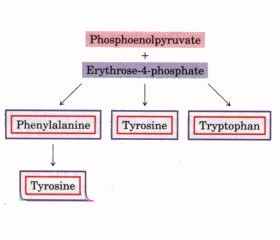
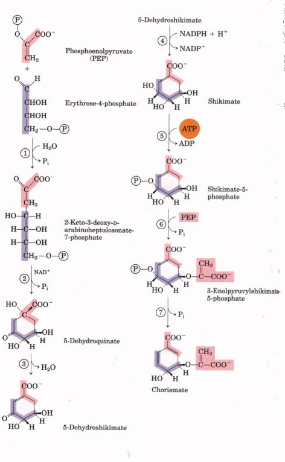
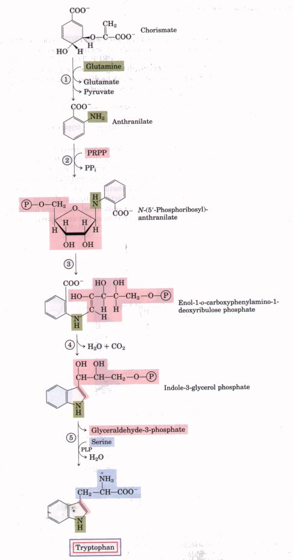
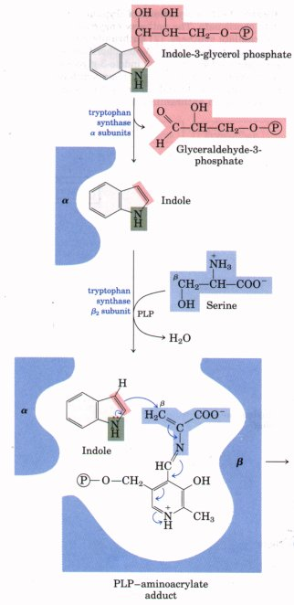
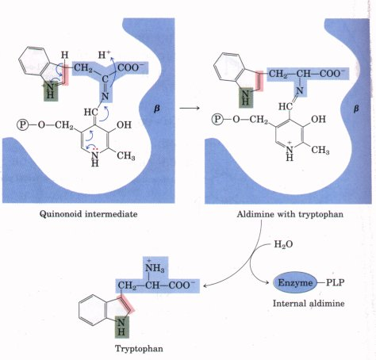
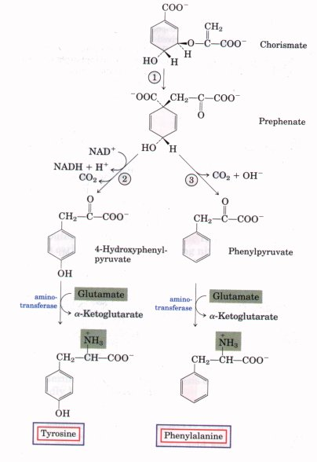
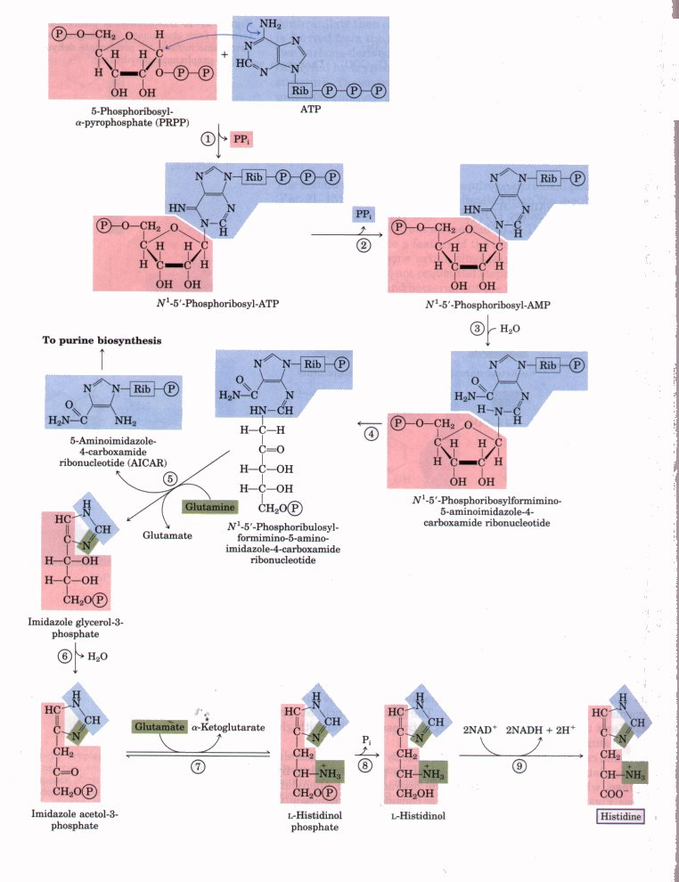
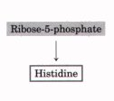
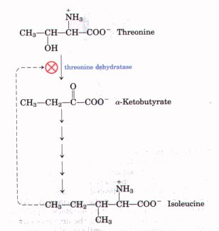
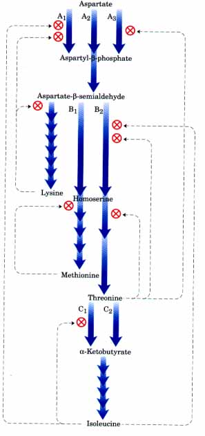

| Tryptophan, phenylalanine, and tyrosine
are synthesized in bacteria by well-understood pathways
that share a number of early steps. The first four steps
result in the production of shikimate, in which the seven
carbons are derived from erythrose-4-phosphate and
phosphoenolpyruvate (Fig. 21-13). Shikimate is converted
to chorismate in three more steps that include the
addition of three more carbons from another molecule of
phosphoenolpyruvate. Chorismate is the first branch
point, with one branch leading to tryptophan and the
other to phenylalanine and tyrosine.  |
 Figure 21-13 Synthesis of chorismate, a key intermediate in the synthesis of the aromatic amino acids. All carbons are derived from either erythrose-4-phosphate (purple) or phosphoenolpyruvate (red). The pathway enzymes are: (l) 2-keto-3-deoxy- D-arabinoheptulosonate-7-phosphate synthase, (2) dehydroquinate synthase, (3) 5-dehydroquinate dehydratase, (4) shikimate dehydrogenase, (5) shikimate kinase, 3-enoylpyruvylshikimmate-5phosphate synthase, and (7) chorismate synthase. Note that step (2) requires NAD+ as a cofactor, and NAD+ is released unchanged. It may be transiently reduced to NADH during the reaction, to produce an oxidized reaction intermediate. |
 |
Figure 21-14 Biosythesis
of trytophan from chorismate . The pathway enzymes are : In E. coli , enzyme 1 and 2 are subunits of a single complex called anthranilate synthase . |
On the tryptophan branch (Fig. 21-14), chorismate is converted first to anthranilate. In this reaction, glutamine donates a nitrogen that ultimately becomes part of the completed indole ring.
Anthranilate then condenses with PRPP. The indole ring of tyrptophan is derived from the ring carbons and amino group of anthranilate plus two carbons derived from PRPP. The final reaction in the sequence is catalyzed by tryptophan synthase, an enzyme with an α2β2 subunit structure. The enzyme can be dissociated into two a subunits and a β2 unit that catalyze different parts of the overall reaction:
Indole-3-glycerol phosphate  indole +
glyceraldehyde-3-phosphate indole +
glyceraldehyde-3-phosphate |
α subunit |
| Indole + serine tryptophan + Hz0 |
β2 unit |
The second part of the reaction requires a pyridoxal phosphate cofactor (Fig. 21-15). Indole is rapidly channeled from the α-subunit active site to the β-subunit active site, where it is condensed with a Schiff base intermediate derived from serine and PLP. This kind of channeling of intermediates may be a feature of the entire pathway from chorismate to tryptophan. Enzyme active sites catalyzing different steps of the pathway (sometimes not sequential steps) are found on single polypeptides in some fungi and bacteria, but are separate proteins in others. In addition, the activity of some of these enzymes requires a noncovalent association with other enzymes of the pathway. These observations suggest that all are parts of a large multienzyme complex in both prokaryotes and eukaryotes. Although such complexes are generally not preserved intact when the enzymes are isolated using traditional biochemical methods, evidence for the existence of multienzyme complexes in cells is accumulating for a number of metabolic pathways.

|
Figure 21-15 Tryptophan synthase catalyzes a multistep
reaction with different types of chemical rearrangements.
First there is an aldol cleavage to form indole and
release glyceraldehyde-3-phosphate. This reaction does
not require PLP. The next step is the dehydration of
serine to form a PLPaminoacrylate intermediate. Indole
condenses with this intermediate, and the product is
hydrolyzed to release tryptophan. These PLP-facilitated
transformations occur at the β carbon of the amino acid,
as opposed to the a-carbon reactions described in Fig.
1?-7. The β carbon of serine is attached to the indole
ring system.  . |
| Phenylalanine and tyrosine
are synthesized from chorismate in plants and
microorganisms via simpler pathways using the common
intermediate prephenate (Fig. 21-16). The paths branch at
prephenate, and the final step in both cases is
transamination with glutamate as amino group donor. Tyrosine can also be made by animals directly from phenylalanine via hydroxylation at C-4 of the phenyl group by phenylalanine hydroxylase, which also participates in the degradation of phenylalanine (see Figs. 17-26, 17-27). Tyrosine is considered a nonessential amino acid only because it can be synthesized from the essential amino acid phenylalanine. |
 Figure 21-16 Biosynthesis of phenylalanine and tyrosine from chorismate. The enzymes are: (l) chorismate mutase, (2) prephenate dehydrogenase, and (3) prephenate dehydratase. |

Figure 21-17 Biosynthesis of histidine. Atoms derived from PRPP and ATP are shaded red and blue, respectively. Two of the histidine nitrogens are derived from glutamine and glutamate (green). The pathway enzymes are: (1) ATP phosphoribosyl transferase, (2) pyrophosphoh drolase (3) phosphoribosyl-AMP cyclohydrolase, (4) phosphoribosylformimino-5-aminoimidazole-4-carboxamide ribonucleotide isomerase, (5) glutamine amidotransferase, (6) imidazole glycerol-3-phosphate dehydratase, (7) L-histidinol phosphate aminotransferase, (8) histidinol phosphate phosphatase, and (9) histidinol dehydrogenase. Note that the derivative of ATP remaining after step (5) is an intermediate in purine biosynthesis (Fig. 21-27), so that ATP is rapidly regenerated.
The histidine biosynthetic pathway in
all plants and bacteria is novel in several respects.
Histidine is derived from three precursors (Fig. 21-17):
PRPP contributes five carbons, the purine ring of ATP
contributes a nitrogen and a carbon, and the second ring
nitrogen comes from glutamine. The key steps are the
condensation of ATP and PRPP (N-1 of the purine ring
becomes linked to the activated C-1 of the ribose in
PRPP) (step l in Fig. 21-17), purine ring opening that
ultimately leaves N-1 and C-2 linked to the ribose (step
3 ), and formation of the imidazole ring in a reaction
during which glutamine donates a nitrogen (step 5 ). The
use of ATP as a metabolite rather than a highenergy
cofactor is unusual, but not wasteful because it
dovetails with the purine biosynthetic pathway. The
remnant of ATP that is released a~fter the transfer of
N-1 and C-2 is 5-aminoimidazole-4-carboxamide
ribonucleotide, an intermediate in the biosynthesis of
purines (see Fig. 21-27) that can rapidly be recycled to
ATP.Amino Acid Biosynthesis Is under Allosteric RegulationThe most responsive manner in which amino acid synthesis is controlled is through feedback inhibition of the first reaction in the biosynthetic sequence by its fmal end product. The first reaction of such a sequence, which is usually irreversible, is catalyzed by an allosteric enzyme. As an example, Figure 21-18 shows the allosteric regulatior of the synthesis of isoleucine from threonine, discussed earlier (Fig 21-12). The end product, isoleucine, is a negative modulator of the firs~ reaction in the sequence. Such allosteric or noncovalent modulation o amino acid synthesis is responsive on a minute-to-minute basis ir bacteria. |
  Figure 21-18 The first reaction in the pathway leading from threonine to isoleucine is inhibited by the end product, isoleucine. This was one of the first examples of allosteric feedback inhibition to be discovered. The steps from α-ketobutyrate to isoleucine correspond to steps 18 through 21 in Fig. 21-12. |
Allosteric regulation can be considerably more complex. An exam ple is the remarkable set of allosteric controls exerted on the activity of glutamine synthetase of E. coli (Fig. 21-5). Six products of glutamim metabolism in E. coli are now known to serve as negative feedbacl modulators of the activity of glutamine synthetase, and the overal effects of these and other modulators are more than additive. This kind of regulation is called concerted inhibition. Because the 20 amino acids must be made in the correct proportions for protein synthesis, cells have developed ways not only of con trolling the rate of synthesis of individual amino acids but also of coo~ dinating their formation. Such coordination is especially well developed in fast-growing bacterial cells. Figure 21-19 shows how E. coli cells coordinate the synthesis of lysine, methionine, threonine, and isoleucine, all made from aspartate. Several important types of inhibition patterns are evident. The step from aspartate to aspartyl-β-phosphate is catalyzed by three isozyme forms (see Box 14-3), each of which can be independently controlled by different modulators. This enzyme multiplicity prevents one biosynthetic end product from shutting down key steps in a pathway when other products of the same pathway are required. The steps from aspartate-β-semialdehyde to homoserine and from threonine to α-ketobutyrate (Fig. 21-12) are also catalyzed by dual, independently controlled isozymes. One of the isozymes for the conversion of aspartate to aspartyl-β-phosphate can be allosterically inhibited by two different modulators, lysine and isoleu~ine, whose action is more than additive. This is another example of concerted inhibition. The sequence from aspartate to isoleucine shows multiple, overlapping negative feedback inhibition; for example, isoLeucine inhibits the conversion of threonine to α-ketobutyrate (as described above), and threonine inhibits its own formation at three points: from homoserine, from aspartate-β-semialdehyde, and from aspartate (steps 4 , 3 , and 1 in Fig. 21-12). This overall action is called sequential feedback inhibition. |
 Figure 21-19 Interlocking network of regulatory mechanisms in the biosynthesis of several amino acids derived from aspartate in E. coli. Three enzymes (A, B, C) are shown that have either two or three isozyme forms, indicated by numerical subscripts. In each case one of the isozymes (A2, B1, and C2) is shown as having no allosteric regulation; these are regulated by varying the amounts synthesized at the genetic level. Synthesis of isozymes A2 and B1 is repressed when methionine levels are high, and synthesis of isozyme C2 is repressed when isoleucine levels are high. This type of genetic regulation is described in Chapter 27. Enzyme A is aspartokinase; B, homoserine dehydrogenase; C, threonine dehydratase. |